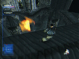
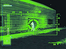

Syphon Filter se réclame de la même famille que Tenchu et Metal
Gear Solid, c'est à dire un jeu d'action réaliste où on ne se
contente plus de blaster tout azimut. D'ailleurs, je vais commencer
par répondre à la question que tous le monde se pose (ça me
fait une introduction toute trouvée) : que vaut Syphon Filter
par rapport à Metal Gear ?
Personnellement, je trouve Syphon largement meilleur. Hein
? Quoi ? Eh oui. MGS est un jeu tellement médiatisé que ses
défauts, pourtant nombreux, n'ont été pratiquemment pas mentionnés.
Notamment, le plus gros défaut : le dirigisme. En effet, dans
MGS, le joueur est constamment aiguillé sur la bonne décision
(Meryl se trouve à tel endroit, Otacon a tel autre, pour abattre
Sniper Wolf il te faut telle arme... etc...).
Avouez que question suspense on a fait mieux. Sans compter
la linéarité de l'aventure, les incohérences (vous connaissez
beaucoup d'agents qui partent en mission sans avoir au moins
un flingue), les armes peu nombreuses... etc... Le seul point
fort de MGS reste la mise en scène et la cohérence du scénario.

Syphon Filter propose un scénario basique : des terroristes ont
volé un virus et menace de le diffuser. Cependant, la mise en
place de l'action est bien plus efficace : les missions sont nombreuses
(20), elles sont variées tant par le décor (rues de Washington,
parc, musée, métro... etc...) que par l'objet (protéger une brigade
de déminage, prendre en filature un individu suspect, déglinguer
un hélicoptère... etc...), les armes ne font pas défaut.
On retrouve le désormais classique fusil sniper (toujours aussi
jouissif) mais aussi un M16, un fusil à pompe, des grenades, des
pains de C4, différents fusils d'assaut, un lance-grenade. Bref,
tout ce qu'il faut pour faire comprendre a ces foutus terroristes
qu'ils finissent par nous emmerder à la longue.
De même, Gabe Logan (votre perso) dispose d'une panoplie assez
complète d'objets allant de la lampe torche (pratique parce que
le jeu à tendance à être sombre... pour l'ambiance) à la lunette
infrarouge en passant par le radar. Voilà, en gros, la structure
du jeu. Je ne vais pas en dire plus, il vous faudra bien découvrir
les choses par vous-même.

Passons un peu à la partie technique. Graphiquement, Syphon est
moyen tirant sur le correct (faut pas oublier qu'on est sur PS).
Disons que les graphismes ont un aspect un peu pauvre : les textures
ne sont pas toujours très détaillées, et le tout a un côté légèrement
anguleux. Par contre, les effets (flamme... etc...) sont plutôt
réussis.
On visualise Logan avec une vue à la 3ème personne assez proche
de Tomb Raider et on peut passer en vue subjective quand on le
désire. La prise en main apparaît délicate dans un premier temps
(Logan disposant d'une palette de mouvements assez complète) mais
en s'accrochant un peu ça ne pose plus problème.
D'ailleurs, le niveau de difficulté de Syphon n'est pas toujours
bien dosé : parfois, les missions sont simples (pour peu que l'on
soit attentif) et d'autres fois, elles sont carrément ardues.
Quoiqu'il en soit, le soft donne du fil à retordre, ce qui n'est
pas un mal. Ah, j'allais oublier la bande-sonore : la musique
est excellente, les bruitages corrects et les voix françaises
pas trop mal (même si je préfére malgré tout la vo, le jour ou
Sony comprendra que les sous-titres c'est pas pour les chiens).
Par contre, la traduction texte...
Par exemple "headshot" (qui se traduit par "tir dans la tête")
est ici traduit par "coup de tête". Bravo les gars, ça fait vachement
sérieux.
Du reste, je souhaiterais vraiment que cette habitude qui consiste
à inclure des phrases-écran du type "coup de tête" ou "ramasser
fusil à pompe" disparaisse une bonne fois pour toute parce qu'on
a l'impression d'être pris pour des débiles. Ah, c'est vrai que
la PS est une console grand-public. Ceci explique sans doute cela.
Dernier point : l'IA. Bof.
Un truc râlant : les ennemis surgissent souvent de nulle part,
ce qui est très irréel. Et en grand nombre, ce qui l'est encore
plus. C'est d'ailleurs la raison pour laquelle Syphon Filter reste
quand même un jeu d'action.
Action "intelligente" mais action quand même. Un peu comme GoldenEye
(sur N64) qui est finalement le soft qui s'en rapproche le plus.
Au final, je me suis vraiment régalé avec Syphon Filter. En fait,
malgré les petites imperfections signalées plus haut, c'est un
jeu qui accroche et une fois que l'on commence on a du mal à s'arrêter.
Pour ceux qui en ont marre des éternels jeux de sports (domaine
de prédilection de la PS) ou des softs pour bébés (Ape Escape,
Croc 2), je vous conseille ardemment d'aller faire un tour du
côté de Syphon qui ne vous décevra pas.